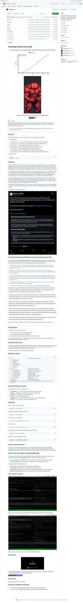
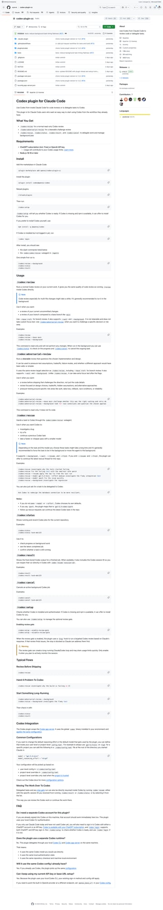
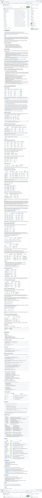
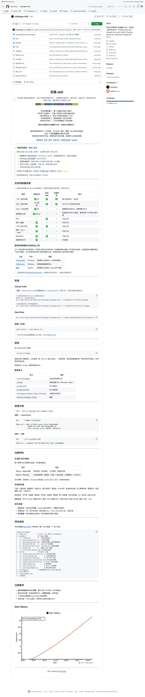

5个GitHub新星项目速报！Claw-Code史上最快百万星、同事永生Skill等爆火开源
Neo整理
每天凌晨，我会自动扫描GitHub Trending，筛选出60天内创建、增长最快的高潜力项目，计算"新星指数"（周增长/√总Star），为你发现下一个可能爆发的开源项目。
今天发现了5个新星项目，涵盖AI编程代理、量化推理、职场AI、开源运动等热门领域。其中 Claw-Code 创下GitHub历史最快破10万星纪录，Claude Code 源码研究热潮仍在继续。让我们一起来看看！
Claw-Code：史上最快破10万星的开源项目
Claw-Code 在不到48小时内突破10万星，刷新了GitHub历史上仓库增长的所有纪录。这个由韩国开发者社区 instructkr 发起的项目，号称是"更好的 Claude Code"——一个完全用 Rust 重写的终端AI编程代理，兼容 Claude Code 的所有 Skills 和工作流，同时在性能、内存占用和启动速度上实现数量级的提升。

▲ Claw-Code：GitHub史上最快破10万星的仓库
Claude Code 自开源以来一直是终端AI编程代理的标杆，但其 TypeScript/Node.js 架构在大型代码库上存在明显的性能瓶颈：启动慢（冷启动 2-3 秒）、内存占用高（动辄 500MB+）、文件索引速度受 V8 GC 制约。Claw-Code 用 Rust 从零重写了整个运行时，保留了与 Claude Code 完全兼容的 Skill 接口和 CLAUDE.md 配置格式。
💡 核心价值：Rust 原生性能 + Claude Code 生态兼容。冷启动 <100ms，内存占用 <50MB，文件索引速度快 10-50 倍。对于习惯 Claude Code 工作流但苦于性能问题的开发者来说，这是一个无缝迁移的选择。
核心功能：
- Rust 原生运行时 — 冷启动 <100ms，内存 <50MB，ripgrep 级文件搜索
- 完全兼容 Claude Code — 支持 CLAUDE.md、.claude/skills/、所有现有 Skills
- 多模型支持 — 内置 Claude、GPT-4、Gemini、DeepSeek 等模型适配
- 增量文件监听 — 基于 notify-rs 的文件系统事件，零轮询索引更新
- 插件系统 — Lua 脚本扩展，支持自定义工具和钩子
# 安装（支持 macOS / Linux / Windows）
curl -fsSL https://claw.sh/install.sh | sh
# 或通过 cargo
cargo install claw-code
# 使用方式与 Claude Code 完全一致
claw "帮我重构这个函数"Learn-Coding-Agent：Coding Agent 研究全景图
Learn-Coding-Agent 是一个系统性的 Coding Agent 研究资料库，由国内开发者 sanbuphy 发起。项目覆盖了从 Claude Code、Codex、Cursor 到 Devin 等所有主流 AI 编程代理的架构分析、源码解读、Prompt 工程、评测对比，是目前最全面的 Coding Agent 学习资源。
▲ Learn-Coding-Agent：Coding Agent 研究全景图
2026年是 Coding Agent 元年——Claude Code、Codex CLI、Gemini CLI 等产品的密集发布让整个行业都在讨论"AI会不会取代程序员"。但大多数讨论停留在使用层面，真正深入理解这些系统如何工作的资料却极度稀缺。Learn-Coding-Agent 填补了这个空白。
💡 核心价值：从"会用"到"理解原理"的桥梁。无论你是想构建自己的 Coding Agent，还是想更高效地使用现有工具，这个资料库都是必读之选。
核心内容：
- 架构深度解析 — Claude Code 的 Tool Loop、Codex 的沙箱机制、Cursor 的 Shadow Workspace
- Prompt Engineering — 各大 Agent 的系统提示词分析和最佳实践
- 源码分析 — Claude Code TypeScript 源码逐模块拆解，含调用链路图
- 评测框架 — SWE-bench、HumanEval 等基准测试方法论
- 前沿论文 — Agent 规划、工具使用、自我修复等领域的最新研究
git clone https://github.com/sanbuphy/learn-coding-agent.git
# 直接阅读 README 即可，按主题分类的目录结构非常清晰Codex-Plugin-CC：在 Claude Code 中调用 Codex 审查代码
Codex-Plugin-CC 是 OpenAI 官方发布的一个 Claude Code 插件，让你可以直接在 Claude Code 的工作流中调用 Codex 来审查代码或委托任务。这是 OpenAI 首次为竞品平台发布官方集成插件，标志着 AI 编程工具生态正在走向互操作时代。

▲ OpenAI 官方的 Claude Code 集成插件
在 AI 编程代理领域，Claude Code 和 Codex 各有所长：Claude 擅长长上下文理解和复杂推理，Codex 在代码生成和快速迭代上有独特优势。Codex-Plugin-CC 让这两个系统可以协同工作：你可以让 Claude Code 负责架构设计和代码审查的规划，然后将具体的代码审查或重复性编码任务委托给 Codex 执行。
💡 核心价值：AI Agent 互操作的里程碑。让不同 AI 系统发挥各自优势协同工作，而非强迫用户在工具之间切换。OpenAI 发布这个插件也暗示了行业对"Agent 生态开放"的共识。
核心功能：
- 代码审查委托 — 在 Claude Code 中一键将代码审查任务发送给 Codex
- 任务分发 — 支持将大任务拆分成子任务，分别由 Claude 和 Codex 处理
- 结果整合 — Codex 的审查意见自动回传到 Claude Code 会话
- 沙箱隔离 — Codex 在独立沙箱中运行，安全可控
- 灵活配置 — 支持自定义 Codex API Key、模型选择、超时策略
# 安装到 Claude Code
npm install -g codex-plugin-cc
# 在 Claude Code 中使用
"用 Codex 帮我审查这个 PR"
"委托 Codex 生成这个 API 的单元测试"TurboQuant+：让 MacBook 跑 104B 模型的 KV Cache 压缩黑科技
TurboQuant+ 是 Google Research TurboQuant 论文（ICLR 2026）的实现与扩展，专注于 llama.cpp 的 KV Cache 压缩。通过 PolarQuant + Walsh-Hadamard 旋转技术，它能将 KV Cache 压缩 3.8-6.4 倍，让128GB MacBook 在 128K 上下文运行 104B 参数模型——这在之前是不可能的。

▲ TurboQuant+：KV Cache 极致压缩方案
本地运行大模型最大的瓶颈不是计算，而是内存。KV Cache 的内存占用随上下文长度线性增长：一个 70B 模型在 48K 上下文下，KV Cache 就要吃掉 20-30GB 内存。TurboQuant+ 将这个数字压缩到原来的 1/4 到 1/6，且预填充速度与 q8_0 持平，质量损失极小（PPL 仅增加 1-2%）。
💡 核心价值：让消费级硬件运行企业级模型。M5 Max 128GB 上实测 Command-R+ 104B 在 128K 上下文下 PPL 仅 4.024。三个关键发现已被多个独立研究者验证：V压缩免费、所有质量损失来自K压缩、边界层保护可恢复37-91%质量。
核心功能：
- 三级压缩格式 — turbo2（6.4x, 2-bit）、turbo3（4.6x, 3-bit）、turbo4（3.8x, 4-bit）
- 非对称 K/V 压缩 — K 保持 q8_0 精度 + V 用 turbo 压缩，拯救低位宽模型
- Boundary V — 层感知压缩：保护首尾各2层 q8_0，中间层 turbo2，15行代码无速度损失
- Sparse V — 注意力门控反量化：跳过低权重位置，长上下文解码速度 +22.8%
- 跨平台验证 — Metal (M1-M5)、CUDA (RTX 3090-5090)、HIP (AMD RX 9070 XT) 全覆盖
# 使用 TurboQuant 版 llama.cpp
git clone https://github.com/TheTom/llama-cpp-turboquant.git
cd llama-cpp-turboquant && git checkout feature/turboquant-kv-cache
cmake -B build -DGGML_METAL=ON -DCMAKE_BUILD_TYPE=Release
cmake --build build -j
# 运行推理（推荐配置）
./build/bin/llama-server -m model.gguf \
-ctk turbo4 -ctv turbo4 -fa 1 -ngl 99同事.skill：把离职同事变成 AI Skill 的赛博永生方案
同事.skill 是一个将离职同事的工作经验和人格特征转化为可调用 AI Skill 的工具。提供同事的聊天记录、文档、邮件等原材料，加上你的主观描述，它能生成一个真正能替他工作的 AI Skill——用他的技术规范写代码，用他的语气回答问题，甚至知道他什么时候会甩锅。

▲ 同事.skill：赛博永生，从工位开始
职场中最痛苦的事情之一，就是核心成员离职后留下的知识真空。三页交接文档想概括三年的积累，结果接手的人花了三个月还在踩前人的坑。同事.skill 用一种极其巧妙的方式解决这个问题：它不是简单的知识库——它生成的是一个有完整人格模型的 AI 角色，包含工作技能（Work Skill）和性格画像（Persona）两部分。
💡 核心价值：从"文档交接"到"人格传承"的范式转换。生成的 Skill 不仅知道"怎么做"，还知道"为什么这样做"和"遇到这种情况他会怎么反应"。支持飞书/钉钉/Slack/微信自动采集数据。
核心功能：
- 多源数据采集 — 飞书 API 全自动、钉钉浏览器抓取、Slack Bot、微信记录导入
- 5层性格结构 — 硬规则→身份→表达风格→决策模式→人际行为
- 职级与文化适配 — 字节范、阿里味、腾讯味…完整支持大厂职级体系
- 增量进化 — 追加新资料自动 merge，对话纠正即时生效
- 版本管理 — 每次更新自动存档，支持回滚到任意历史版本
# 安装到 Claude Code
mkdir -p .claude/skills
git clone https://github.com/titanwings/colleague-skill .claude/skills/create-colleague
# 在 Claude Code 中使用
/create-colleague
# 按提示输入：姓名、职级（如"字节 2-1 算法工程师"）、性格标签
# 生成后用 /{slug} 调用该同事总结
本期最大的看点是 Claw-Code 史上最快破10万星，充分说明社区对"更快的 AI 编程代理"的强烈需求。Rust 重写 + 生态兼容的路线也验证了一个趋势：当工具足够成熟，性能优化就成为下一个竞争维度。
另一个值得关注的趋势是 Agent 生态的开放与互操作。OpenAI 为 Claude Code 发布官方插件 (Codex-Plugin-CC)，标志着 AI 编程工具正从"平台锁定"走向"协同共生"。
TurboQuant+ 则代表了本地推理领域的持续创新——让消费级硬件运行百亿参数模型、128K 上下文，这在一年前还是天方夜谭。
最后，同事.skill 和 Learn-Coding-Agent 分别从"人的维度"和"知识的维度"回应了 AI 时代的核心焦虑：如何保存和传递人类经验。
| 项目 | Stars | 新星指数 | 语言 | 一句话 |
|---|---|---|---|---|
| Claw-Code | 111K | 333.2 | Rust | Rust 重写的 Claude Code，史上最快破10万星 |
| Learn-Coding-Agent | 10.4K | 102.1 | 文档 | 最全面的 Coding Agent 研究资料库 |
| Codex-Plugin-CC | 7.9K | 89.0 | JavaScript | OpenAI 官方 Claude Code 插件，Agent 互操作里程碑 |
| TurboQuant+ | 4.7K | 68.8 | Python | KV Cache 压缩 3.8-6.4x，MacBook 跑 104B |
| 同事.skill | 4.6K | 67.7 | Python | 离职同事→AI Skill，赛博永生1.0 |
以上数据截至2026年4月2日凌晨。新星指数 = 周增长 / √总Star，指数≥30入选。